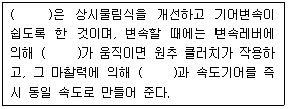

자동차정비기능사 (2009-07-12 기출문제)
1과목: 자동차공학
1. LPG 차량의 연료 계통에서 가솔린 엔진의 기화기 역할을 하며 감압, 기화 및 압력조절 작용을 하는 것은?
- 솔레노이트밸브(solenoid valve)
- 믹서(mixer)
- 베이퍼라이저(voporizer)
- 봄베(bombe)
(정답률: 83%)

2. 행정 길이 200mm인 가솔린 기관에서 피스톤의 평균 속도가 5m/s 이면, 크랭크축의 1분간 회전수는?
- 75rpm
- 150rpm
- 750rpm
- 1500rpm
(정답률: 54%)
3. 다음중 가솔린 분사방법으로 기관의 각 실린더마다 독립적으로 분사하는 방식은?
- 듀얼 포인트 인젝션
- 싱글 포인트 인젝션
- 연속 포인트 인젝션
- 멀티 포인트 인젝션
(정답률: 55%)
4. 과급기(turbo charger)가 부착된 기관에 대한 설명으로 옳은 것은?
- 배기에 속도에너지를 주는 기관이다.
- 공기와 연료와의 혼합을 효율적으로 하는 기관이다.
- 실린더에 공급되는 흡입공기 효율을 향상시키는 기관이다.
- 피스톤 펌프 운동에 의해 공기를 흡입하는 기관이다.
(정답률: 78%)
5. 가솔린의 안티노크성을 표시하는 것은?
- 세탄가
- 헵탄가
- 옥탄가
- 프로판가
(정답률: 91%)
6. 다음 중 기관이 과열되는 원인이 아닌 것은?
- 온도조절기가 닫힌 상태고 고장 났을 때
- 방열기의 용량이 클 때
- 방열기의 코어가 막혔을 때
- 벨트를 사용하는 형식에서 팬벨트 장력이 느슨할 때
(정답률: 76%)
7. 디젤 기관의 연료 분무형성과 관계가 있는 것은?
- 관통력과 무화
- 직진성과 노크
- 착화성과 무화
- 분포성과 직진성
(정답률: 61%)
8. 총 배기량이 2209CC인 디젤기관이 2800rpm 일 경우 기관의 출력이 69PS 라면, 엔직의 회전력은 몇 kgfㆍm 인가?(단, 4행정 4기통 기관이다.)
- 17.6
- 20.3
- 22.4
- 40.6
(정답률: 36%)
9. 크랭크축이 회전 중 받는 힘이 아닌 것은?
- 휨(bending)
- 비틀림(torsion)
- 관통(penetration)
- 전단(shearing)
(정답률: 73%)
10. 실린더 안지름 80mm, 행정이 70mm 인 4실린더 4행정 기관에서 회전수가 2000rpm 이라면, 분당 총 배기량은 약 몇 ℓ인가?
- 약 1600
- 약 1942
- 약 1500
- 약 1407
(정답률: 48%)
11. 전자제어 엔진의 삼원 촉매 컨버터에서 질소산화물(NOx)은 다음 중 무엇으로 환원되는가?
- N2 , CO
- N2 , H2
- N2, O2
- N2 , CO2 , H2O
(정답률: 55%)
12. 자동차용 센서 중 압전소자를 이용하는 것은?
- 스로틀포지션센서
- 조향각센서
- 맵센서
- 차고센서
(정답률: 70%)
13. 일반적인 오일의 양부 판단 방법이다. 틀리게 설명한 것은?
- 오일의 색깔이 우유색에 가까운 것은 물이 혼입되어 있는 것이다.
- 오일의 색깔이 회색에 가까운 것은 가솔린이 혼입되어 있는 것이다.
- 종이에 오일을 떨어뜨려 금속분말이나. 카본의 유무를 조사하고 많이 혼입된 것은 교환한다.
- 오일의 색깔이 검은색에 가까운 것은 너무 오랫동안 사용했기 때문이다.
(정답률: 68%)
14. 자동차 제동등이 다른 등화와 겸용하는 제동등일 경우 조작시 그 광도가 몇 배 이상 증가하여야 하는가?
- 2배
- 3배
- 4배
- 5배
(정답률: 72%)
15. 가솔린기관에서 연료펌프 내의 첵밸브가 열린 채로 고장이 있을 때를 설명한 것 중 틀린 것은?
- 시동이 걸리지 않는다.
- 주행성능에 영향은 없다.
- 연료탱크 내에 설치되어 있다.
- 연료펌프에 무리가 가지 않는다.
(정답률: 59%)
16. 기관에서 온도센서는 어떤 역할을 하는가?
- 기관의 냉각수 온도를 측정하여 이를 전기적 신호로 바꾸어 ECU에 보낸다.
- 외부온도를 측정하여 이를 전기적 신호로 바꾸어 ECU에 보낸다.
- 냉각수 온도를 측정하여 직접 시동 밸브로 신호를 보낸다.
- 기관온도를 측정하여 공기센서에 신호를 보내어 혼합기를 조정한다.
(정답률: 63%)
17. 전자제어 가솔린 기관의 인젝션 분사시간에 대한 설명으로 틀린 것은?
- 급 가속시에는 순각적으로 분사시간이 길어진다.
- 축전지 전압이 낮으면 무효 분사시간이 길어진다.
- 감속시에는 경우에따라 연료공급이 차단된다.
- 산소센서의 전압이 높으면 분사시간이 길어진다.
(정답률: 50%)
18. 전자제어 엔진에서 인젝터의 점검 방법이 아닌 것은?
- 인젝터 코일 저항 측정
- 인젝터 작동음 확인
- 인젝터 분사상태 확인
- 인젝터 작동온도 측정
(정답률: 47%)
19. 가스 흐름의 관성을 유효하게 이용하기 위하여 흡ㆍ배기 밸브를 동시에 열어주는 작용을 무엇이라 하는가?
- 블로 다운(blow-down)
- 블로 바이(blow-by)
- 밸브 바운드(valve bound)
- 밸브 오버랩(valve overlap)
(정답률: 78%)
20. 기관에 흡입되는 공기를 여과하고 흡입시 강한 소음을 감소시키는 기능을 하는 것은?
- 공기 닥터
- 오일 여과기
- 공기 여과기
- 공기 챔버
(정답률: 82%)
2과목: 자동차정비 및 안전기준
21. 연료는 그 온도가 높아지면 외부로부터 불꽃을 가까이 하지 않아도 발화하여 연소된다. 이때의 최저온도를 무엇이라 하는가?
- 인화점
- 착화점
- 연소점
- 응고점
(정답률: 78%)
22. 유압식 밸브 리프터의 유압은 어떤 유압을 이용하는가?
- 흡기다기관의 진공압을 이용한다.
- 배기다기관의 배기압을 이용한다.
- 별도의 유압펌프를 사용한다.
- 윤활장치의 유압을 이용한다.
(정답률: 50%)
23. 전자제어 연료분사 장치의 인젝터는 무엇에 의해서 연료를 분사하는가?
- 연료 펌프의 송출압력
- ECU의 분사신호
- 풀런저의 상승
- 냉각 수온센서의 신호
(정답률: 74%)
24. 자동변속기 오일의 요구 조건으로 틀린 것은?
- 기포가 생기지 않을 것
- 마찰계수가 "0"을 유지할 것
- 저온 유동성이 좋을 것
- 점도지수 변화가 적을 것
(정답률: 67%)
25. 축거 3m, 바깥쪽 앞바퀴의 최대회전각 30°, 안쪽 앞바퀴의 최대회전각은 45° 일 때의 최소회전 반경은?(단, 바퀴의 접지면과 킹핀 중심과의 거리는 무시)
- 15m
- 12m
- 10m
- 6m
(정답률: 39%)
26. 20km/h로 주행하는 자동차가 10초후에 가속하여 56km/h 속도가 되었다. 이때의 가속도는?
- 1m/s2
- 20m/s2
- 30m/s2
- 36m/s2
(정답률: 46%)
27. ABS의 구성품 중 휠 스피드 센서의 역할은?
- 바퀴의 록(lock) 상태 감지
- 차량의 과속을 억제
- 브레이크 유압 조정
- 라이닝의 마찰 상태 감지
(정답률: 76%)
28. 종 감속비를 결정하는데 필요한 요소가 아닌 것은?
- 엔진출력
- 차량중량
- 가속성능
- 제동성능
(정답률: 43%)
29. 브레이크를 밟았을 때 하이드로백 내의 작동으로 틀린 것은?
- 공기 밸브는 닫힌다.
- 진공 밸브는 닫힌다.
- 동력 피스톤이 하드드로릭 실린더 쪽으로 움직인다.
- 동력 피스톤 앞쪽은 진공상태이다.
(정답률: 53%)
30. 자동변속기에서 댐퍼클러치의 작동을 제어하는 요소로 가장 거리가 먼 것은?
- 엔진 회전수
- 스로틀 포지션 센서
- 유온 센서
- 흡입공기량 센서
(정답률: 42%)
31. 자동차의 앞바퀴 정렬에서 토인 조정은 무엇으로 하는가?
- 드래그 링크의 길이
- 타이로드의 길이
- 시임의 두께
- 와셔의 두께
(정답률: 84%)
32. 브레이크 마스터 실린더의 푸시로드 길이를 길게 하였을 때 발생할 수 있는 현상은?
- 라이닝 작용이 원활하다.
- 라이닝이 팽창하여 풀리지 않을 수 있다.
- 브레이크 페달 높이가 낮아진다.
- 라이닝 팽창이 풀린다.
(정답률: 62%)
33. 독립현가식 자동차에서 주행 중 롤링(rolling) 현상을 감소 시키고 차의 평형을 유지시켜 주는 주된 장치는?
- 쇽업소버
- 스테이빌라이저
- 스트럿바아
- 토크컨버터
(정답률: 74%)
34. 주로 승용차에 사용되며 고속주행에 알맞는 타이어의 트래트 패턴은?
- 러그패턴
- 리브패턴
- 블록패턴
- 오프 더 로드패턴
(정답률: 58%)
35. 엔진의 회전수가 3500rpm, 제2속의 감속비 1.5, 최종감속비 4.8, 바퀴의 반경이 0.3m일 때 차속은?(단, 바퀴는 지면과 미끄럼은 무시한다.)
- 약 35km/h
- 약 45km/h
- 약 55km/h
- 약 65km/h
(정답률: 46%)
36. 전자제어 현가장치(ECS)에서 차고조정이 정지되는 조건이 아닌 것은?
- 커브길 급회전시
- 급 가속시
- 고속 주행시
- 급 정지시
(정답률: 63%)
37. 유압식 클러치에서 차단이 불량한 원인이 아닌 것은?
- 페달의 자유간극이 없음
- 유압계통에 공기가 유입
- 클러치 릴리스 실린더 불량
- 클러치 마스터 실린더 불량
(정답률: 67%)
38. 동력 조향 유압 계통에 고장이 발생한 경우 핸들을 수동으로 조작할 수 있도록 하는 부품은?
- 릴리프 밸브(relief valve)
- 안전 첵 밸브(safety check valve)
- 유량 제어 밸브(flow control valve)
- 더블 밸런싱 밸브(double balancing valve)
(정답률: 68%)
39. 수동변속기에 대한 내용 중 ( ) 안에 들어갈 내용으로 맞는 것은?

- 동기물림식, 슬리브, 주축
- 동기물림식, 허브, 부축
- 섭동물림식, 허브, 출력축
- 섭동물림식, 슬리브, 주축
(정답률: 59%)
40. 일반적으로 수동변속기의 고장 유무를 점검하는 방법으로 적합하지 않은 것은?
- 오일이 새는 곳은 없는지 점검한다.
- 자작기구의 헐거움이 있는지 점검한다.
- 소음발생과 기어의 물림이 빠지는지 점검한다.
- 헤리컬 기어보다 측압을 많이 받는 스퍼기어는 측압와셔 마모를 점검한다.
(정답률: 69%)
3과목: 안전관리
41. 접화장치의 파워트랜지스터가 비정상시 발생 되는 현상이 아닌 것은?
- 엔진 시동이 어렵다.
- 연료소모가 많다.
- 주행시 가속력이 떨어진다.
- 크랭킹이 안된다.
(정답률: 56%)
42. 전조등의 광도가 광원에서 25000cd의 밝기일 경우 전방 100m 지점에서의 조도는?
- 250Lux
- 50Lux
- 12.5Lux
- 2.5Lux
(정답률: 43%)
43. 자동차 전기장치에 흐르는 전압과 전류 그리고 저항에 관한 사항 중 틀린 것은?
- 부특성 서미스터는 온도가 높아지면 저항이 커진다.
- 저항이 크고 전압이 낮을수록 전류는 적게 흐른다.
- 도체의 단면적이 클 경우 저항이 적다.
- 도체의 경우 온도가 높아지면 저항은 커진다.
(정답률: 50%)
44. 발전기 자체의 고장이 아닌 것은?
- 발전기 정류자의 고장
- 브러시의 소손에 의한 고장
- 슬립 링의 오손에 의한 고장
- 릴레이의 오손과 소손에 의한 고장
(정답률: 53%)
45. 축전지 충ㆍ방전 작용에 해당 되는 것은?
- 발열 작용
- 화학 작용
- 자기 작용
- 발광 작용
(정답률: 62%)
46. 기동전동기에 흐르는 전류값과 회전수를 측정하여 기동전동기의 고장 여부를 판단하는 시험은?
- 단선시험
- 단락시험
- 접지시험
- 부하시험
(정답률: 60%)
47. 에어컨 매니폴드 게이지(압력게이지) 접속시 주의 사항이 아닌 것은?
- 매니폴드 게이지를 연결할 때에는 모든 밸브를 잠근 후 실시한다.
- 밸브를 열어 놓은 상태로 에어컨 사이클에 접속한다.
- 황색 호스를 진공펌프나 냉매회수기 또는 냉매 충전기에 연결한다.
- 냉매가 에어컨 사이클에 충전되어 있을 때에는 충전호스, 매니폴드 게이지의 밸브를 전부 잠근 후 분리한다.
(정답률: 70%)
48. 다음 중 자동차의 조향휠 각도센서, 차고센서 등에 의해 사용되는 반도체는?
- 포토 다이오드
- 발광 다이오드
- 포토 트랜지스터
- 사이리스트
(정답률: 40%)
49. 사이드미러(후사경) 열선 타이머 제어시 입ㆍ출력 요소가 아닌 것은?
- 전조등 스위치
- IG 스위치 신호
- 열선 스위치 신호
- 열선 전류
(정답률: 63%)
50. 계기판의 속도계가 작동하지 않은 결함에 대한 고장원인으로 적합한 것은?
- 차량 속도센서(VSS : Vehicle Speed Sensor)결함
- 크랭크각 센서(CPS : Crankshaft Position Sensor)결함
- 흡기매니폴드 압력센서(MAP : Manifold Absolute Pressure Sensor)결함
- 냉각수온 센서(CTS : Coolant Temperature Sensor)결함
(정답률: 66%)
51. 다이얼 게이지로 휨을 측정할 때 게이지를 놓는 방법은?
- 스핀들의 앞 끝을 보기 좋은 위치에 놓는다.
- 스핀들의 앞 끝을 기준면인 축(shaft)에 수직으로 놓는다.
- 스핀들의 앞 끝을 공작물의 우측으로 기울이게 놓는다.
- 스핀들의 앞 끝을 공작물의 좌측으로 기울이게 놓는다.
(정답률: 84%)
52. 다음 중 산업재해에서 (재해건수/연근로시간)×1,000,000을 나타내는 것은?
- 강도율
- 만인율
- 도수율
- 천인율
(정답률: 64%)
53. 자동차에 사용되는 가솔린 연료 화재는 어느 화재에 속하는가?
- A급 화재
- B 급 화재
- C급 화재
- D급 화재
(정답률: 77%)
54. 다음 중 탁상드릴로 둥근 공작물에 구멍을 뚫을 때 공작물 고정방법으로 가장 적합한 것은?
- 손으로 잡는다.
- 바이스 프라이어로 잡는다.
- V블럭과 클램프로 잡는다.
- 헝겊에 싸서 바이스에 고정한다.
(정답률: 55%)
55. 안전ㆍ보건표지의 종류와 형태에서 그림이 나타내는 것은?
- 직진금지
- 출입금지
- 보행금지
- 차량통행금지
(정답률: 66%)
56. 다음 중 부동액의 주성분이 아닌 것은?
- 벤젠
- 에틸렌글리콜
- 메탄올
- 글리세린
(정답률: 65%)
57. 축전지 취급시의 안전 수칙으로 올바른 것은?
- 축전지 표면에 있는 침전물이나 먼지 등은 압축공기를 이용하여 청소한다.
- 황산을 엎지르거나 흐르지 않도록 맨 손으로 취급한다.
- 축전지 취급시 전해액이 신체에 닿지 않도록 한다.
- 축전지 취급시 반지를 끼고 작업하면 안전하다.
(정답률: 65%)
58. 휠 밸런스 시험기 사용시 적합하지 않은 것은?
- 휠 탈ㆍ부탁시에는 무리한 힘을 가하지 않는다.
- 균형추를 정확하게 부착한다.
- 계기판은 회전이 시작되면 즉시 판독한다.
- 시험기 사용 순서를 숙지 후 사용한다.
(정답률: 88%)
59. 다음 중 사고로 인하 재해가 가장 많이 발생하는 기계장치는?
- 타이어
- 벨트와 폴리
- 종감속기어
- 기동전동기
(정답률: 67%)
60. 안전한 작업을 하기 위하여 작업복장을 선정할 때, 유의사항과 가장 거리가 먼 것은?
- 화기사용 직장에서는 방염성, 불연성의 것을 사용하도록 한다.
- 착용자의 취미, 기호 등을 감안하여 적절한 스타일을 선정한다.
- 작업복은 몸에 맞고 동작이 작업하기 편하도록 제작한다.
- 상의의 끝이나 바지 자락 등이 기게에 말려 들어갈 위험이 없도록 한다.
(정답률: 83%)